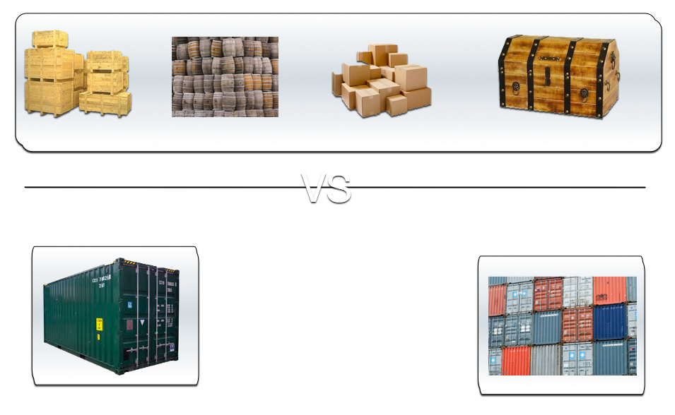
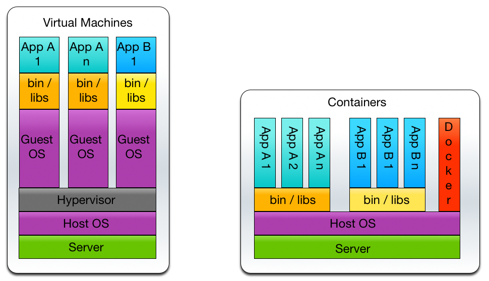
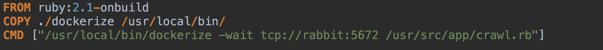
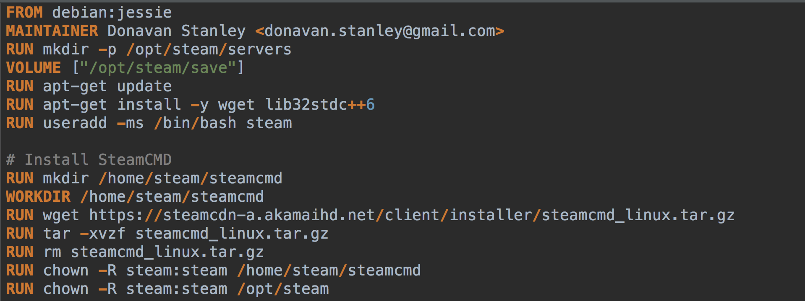
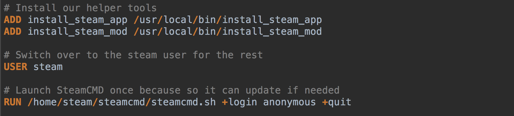
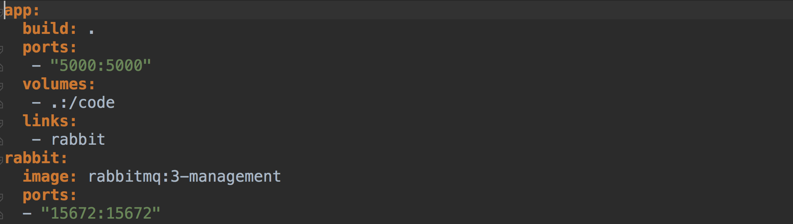
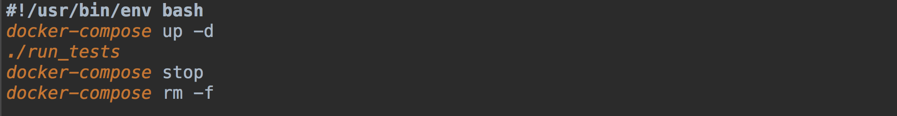
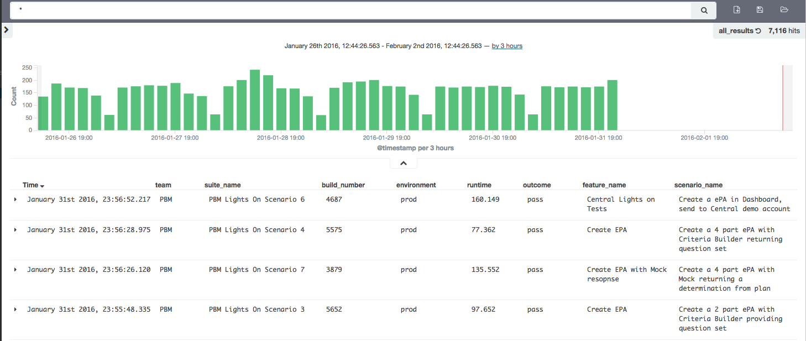

Docker for test engineers
Configuration is code
Created by Donavan Stanley of CoverMyMeds
Obligatory "Who Is This Guy?" section
- Old school systems programmer I've seen the terrors of the world and understood the intrinsic horror of existence
- Full-stack hipster I'm really just old.
- Test Engineer Because it's surprisingly hard to get right.
- Great place to work!
- Smart people!
- Free beer!
- We're hiring!
What is Docker?
“an open source project to pack, ship and run any application as a lightweight container.”
like shipping containers: they provide a standard, consistent way of shipping just about anything.
like virtual machines, except they're not.
Docker’s architecture
Low Level
- Libcontainer - A lightweight alternative to full machine virtualization such as that provided by “traditional” hypervisors
- Copy-on-write filesystem - Allows Docker to instantiate containers very quickly—instead of having to make full copies of whatever files comprise a container.
- UnionFS - Layer stacking makes containers small and fast.
High Level

Source: https://docs.docker.com/engine/introduction/understanding-docker/
Docker Client
- The docker binary, is the primary user interface to Docker.
- It accepts commands from the user and communicates back and forth with a Docker daemon.
Docker Daemon
- Runs on a host machine
- No direct interaction beyond stop/start.
- Requires a Linux host.
Docker images
- A read-only template.
- Could contain an OS, web server and your application.
- Used to create Docker containers.
- Plain text DSL - Makes creating images straightforward and "easy".
- The build component of Docker.
Dockerfile
The complicated version

https://github.com/jwilder/dockerize
The long version
No really..
Dockerfiles are easy
If you can install it on Linux*.
If you can probably run it in Docker.
Docker registries
- Public / private stores from which you upload or download images.
- Docker Hub serves a huge collection of existing images for your use.
- Private self-hosted registries possible.
- The distribution component of Docker.
Docker containers
- Similar to a directory.
- Holds everything that is needed for an application to run.
- Created from a Docker image.
- Can be run, started, stopped, moved, and deleted.
- Isolated and secure application platform.
- The run component of Docker.
Docker Compose
- Tool for defining and running multi-container Docker applications.
- Use a Compose file to configure your application’s services.
- Use a single command, to create and start all the services from your configuration.
- Multiple isolated environments on a single host.
- Great for development, testing, and staging environments.
- Also great for CI workflows
docker-compose up
docker-compose.yml
Use case: Automated testing
- Quick and Dirty Script 
- Or run your tests inside.
Why Docker?
Simplify Configuration
- Treat your environment and configuration like code and deploy it.
- Decouple infrastructure requirements.
- Run your applications across multiple IaaS/PaaS without any extra tweaks
Manage your code pipeline
- Docker provides a consistent environment for the application.
- Docker images are immutable.
- Docker images can be "spun up" quickly.
- Achieve zero change in application runtime environments across dev through production
Developer Productivity
- Docker easily allows many services to run, due to low overhead.
- Shared volumes make the application code available to the container(s).
- Edit code from your platform of choice and see the changes right away.
- Spin up the world, without being an expert.
Server Consolidation
- Application isolation allows consolidating multiple servers to save on cost
- Without the memory footprint of multiple OSes
- Share unused memory across the instances.
- New breed of PAAS all use containers.
- Spin up the world, without being an expert.
Rapid Deployment
- Before VMs, bringing up a new hardware resource took days.
- Virtualization brought this number down to minutes.
- Docker brings it down to seconds.
Multi-tenancy
- Create isolated environments for running multiple instances of app tiers for each tenant
- A complete world is only a docker-compose up away
- Encapsulate custom behavior in custom containers.
Why Not Docker?
- Tooling - But not for long. Kubernetes, Docker Swarm etc
- Operations - Edge Kernels, Filesystem woes, cleanup
- Security - Most vendors still run containers in virtual machines, which have battle-tested security
Running Docker
You need an environment.
Let's make a VM!
What just happened?
- First run pulled the images from Docker Hub.
- Once pulled a container was created from the image.
- A read-write layer is added to the image
- Docker then launched the container, running bash inside it.
- On the second run, the images already existed, much faster!
"Real World" example
Port mapping
- Docker creates a network interface that allows the Docker container to talk to the local host.
- Ports are "exposed" in the Dockerfile.
- Map container ports to host ports with the "-p" command line option.
- OSX/Windows users need to map twice.
Linking containers ("old school" style)
- Use "--name" to name containers
- Use "--link <name or id>:alias" to link containers
docker run -d --name training_db training/postgres
docker run -d -P --name web --link training_db:db training/webapp python app.py
Docker Tools for Testers
Headless Testing
docker run -d -p 4444:4444 -v /dev/shm:/dev/shm selenium/standalone-chrome
or
docker run -d -p 4444:4444 -v /dev/shm:/dev/shm selenium/standalone-firefox
-v /dev/shm:/dev/shm to use the host's shared memory.
require 'watir-webdriver'
caps = Selenium::WebDriver::Remote::Capabilities.chrome
browser = Watir::Browser.new( :remote,
:url => "http://localhost:4444/wd/hub",
:desired_capabilities => caps)
Note: Only one browser can listen on 4444.
Your own grid
docker run -d -p 4444:4444 --name selenium-hub selenium/hub
then
a bunch of times
docker run -d --link selenium-hub:hub -v /dev/shm:/dev/shm selenium/standalone-chrome
require 'watir-webdriver'
caps = Selenium::WebDriver::Remote::Capabilities.chrome
browser = Watir::Browser.new( :remote,
:url => "http://localhost:4444/wd/hub",
:desired_capabilities => caps)
Your own grid (the right way)
docker-compose scale chrome=15 firefox=15
Now add the parallel_tests gem and go to town!
ELK Stack
- Elasticsearch, Logstash, and Kibana
- Elasticsearch is a distributed, open source search and analytics engine.
- Logstash is an open source data collection, enrichment, and transportation pipeline.
- Kibana is an open source data visualization platform.
- Many moving parts

Elastic Results
- Store RSpec / Cucumber results in elastic search.
- https://github.com/covermymeds/elastic_results
- 
More Info
- This presentation with samples https://github.com/Donavan/docker_for_testers
- Steps Towards Automated Testing with Docker and Jenkins http://making.meetup.com/post/122890386432/steps-towards-automated-testing-with-docker-and
- Repeatable and Testable Deployments https://docs.quay.io/solution/repeatable-deployments.html